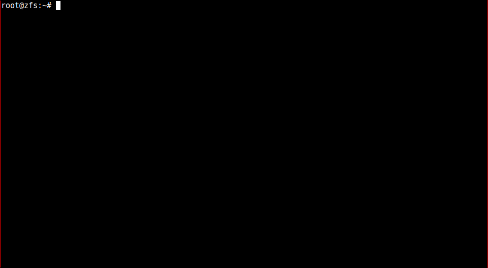

OpenZFS
Talk by Ronen Narkis / @narkisr settings
HDD Failures (Backblaze)
“annualized failure rate for the drive models listed is 2.07% ”
The 3-2-1 backup rule
3 copies of your data
2 media formats
1 off site
ZFS
Originally developed at Sun, opensource since 2005
Ported to FreeBSD, Linux, OSx (Windows maybe?)
A volume manager and a Filesystem
Forked into OpenZFS in Sep 2013
Features list (partial)
COW
Volume Management
Checksummed and self healing
Compression/Dedup
Multiple Redundancy levels
Smart caching
Pool
Collection of VDEVs
VDEV is mirror/Raid/Single disk
Writes distributed evenly among VDEVs
Divided into datasets
Striped VDEV
No redundancy
Fastest performance
Mirror VDEV
Pair of disks
1 Drive can die
Slow(er) write
Fast READ
Easier to expand
RAIDZ VDEV
RAIDZ 1/2/3 (parity disks)
More CPU time (parity)
Better storage efficiency
Pool creation

Dataset
Partitioning the pool
ZFS properties (mount point/compression/quota etc..)
Snapshot-able
Create as many as you want (per VM, etc..)
Dataset creation
{kind=link}
Self healing
Checksum per block on write (per VDEV)
Verified on read
Restored on failure (depending on redundancy)
No need for an fsck (We can scrub)
Snapshots
Cheap to create
Can be mounted
Sent/Receive
Not a backup!
Snapshot creation
{kind=link}
Send and receive
{kind=link}
Resilvering
The process of replacing an HDD
Replacing faulty or growing a VDEV
The pool continues to function
Might moves to a degraded state
Replacing loops
{kind=link}
Adaptive replacement cache (ARC)
Created by IBM
Page level cache
MRU and MFU combined
Self Adjusting (shrinking/growing)
Persistent (L2ARC)
OS selection
Linux (Ubuntu)
FreeBSD, FreeNAS
Omnios, SmartOS (Solaris)
Picking the "right" hardware
ECC vs Non ECC RAM
Disk controllers (No RAID!)
Disks (NAS vs Consumer)
How much RAM?
CPU?
Hardware (high end)
Hardware (low end)
More features
ZVOLs (block devices)
Boot environments
NFS,SAMBA,iSCSI
Resources
Questions ?
Settings
Select theme:
Black (default) -
White -
League -
Sky -
Beige -
Simple
Serif -
Blood -
Night -
Moon -
Solarized